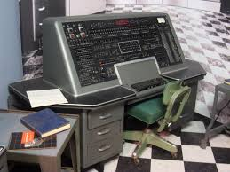

Sobre Grace Hopper
Grace Hopper foi uma cientista da computação e oficial da Marinha dos EUA que fez contribuições significativas para a programação de computadores.
Ela é conhecida por criar o primeiro compilador para uma linguagem de programação e popularizar o termo "bug".
Carreira e Conquistas
Durante a sua carreira, Grace Hopper enfrentou vários desafios e quebrou inúmeras barreiras.
Ela trabalhou no desenvolvimento de linguagens de programação e foi fundamental na criação do COBOL, uma das primeiras linguagens de programação de alto nível.
O Compilador
Grace Hopper criou o primeiro compilador, um avanço que tornou a programação de computadores mais acessível e eficiente. Abaixo, você pode ver algumas imagens dos primeiros compiladores e da máquina UNIVAC.

Mais Informações
Para saber mais sobre a trajetória e o legado de Grace Hopper, consulte sua página na Wikipédia.
Contato
Para mais informações, entre em contato:
Email: debs.dev2003@gmail.com